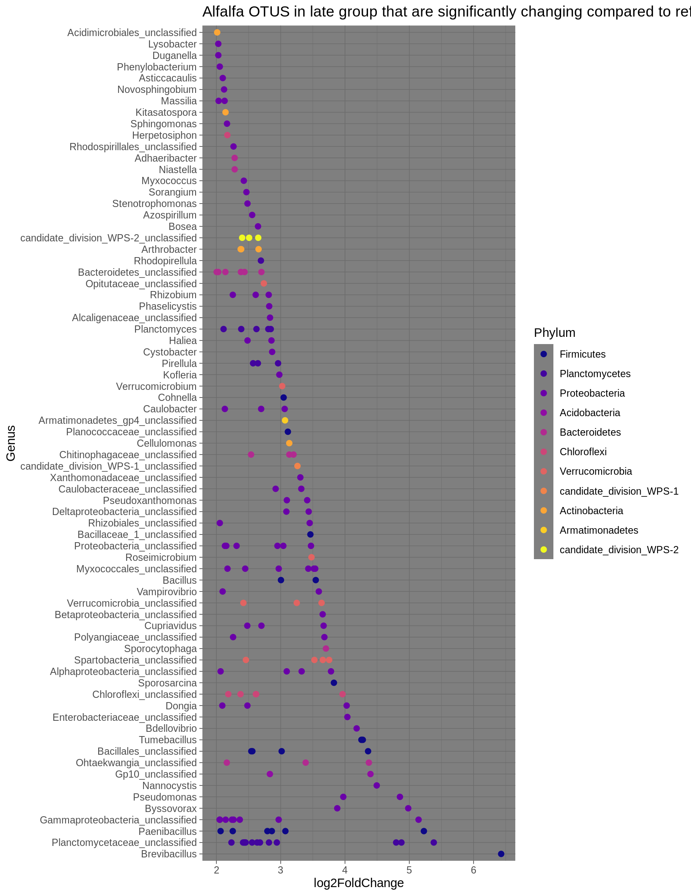
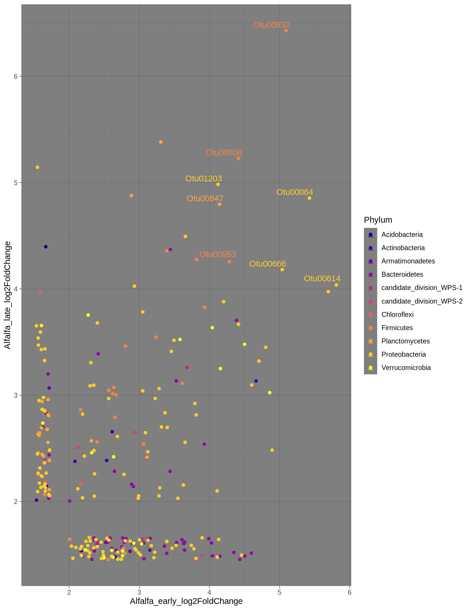
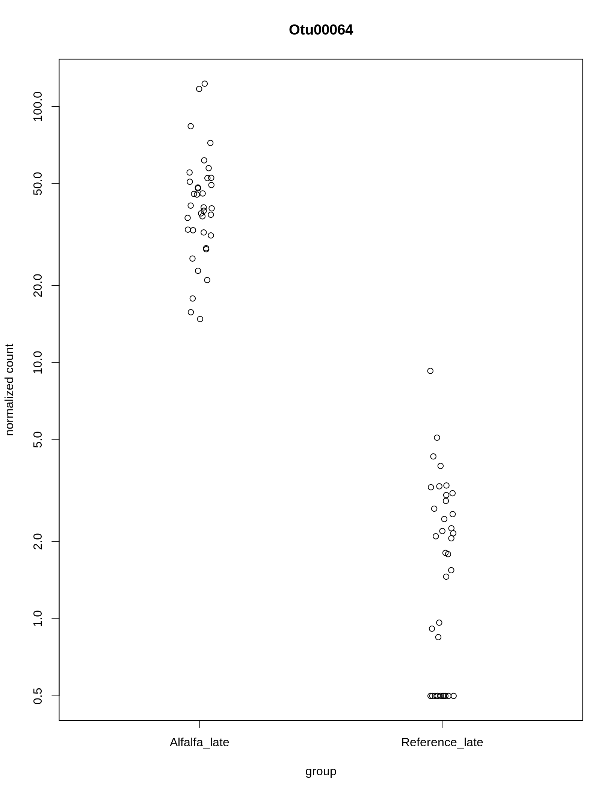
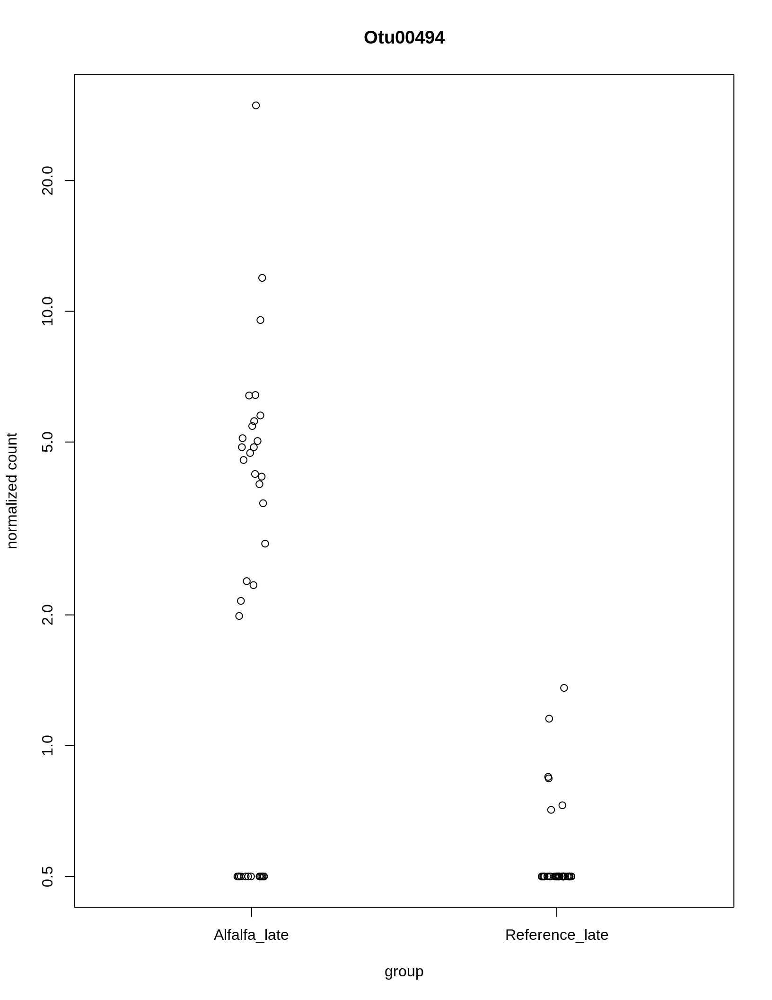
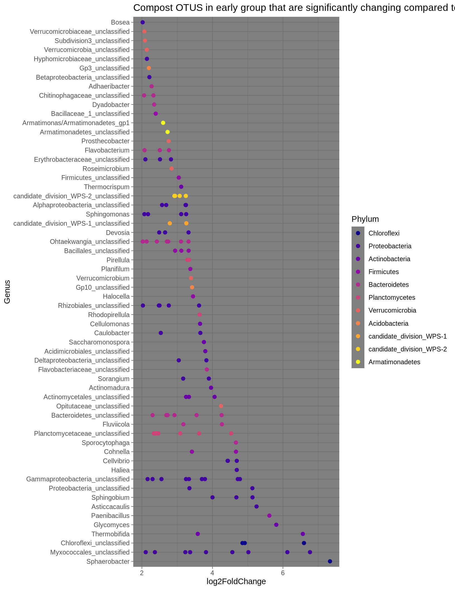
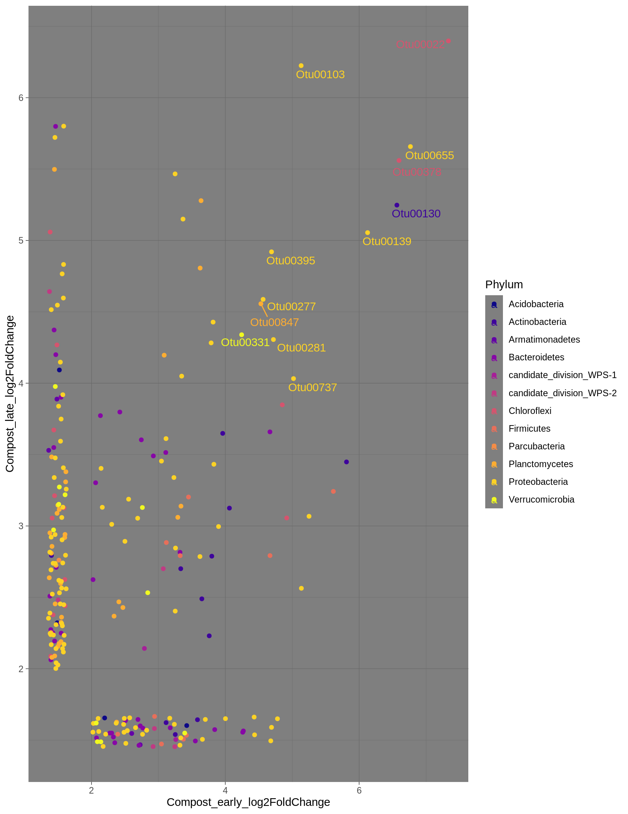
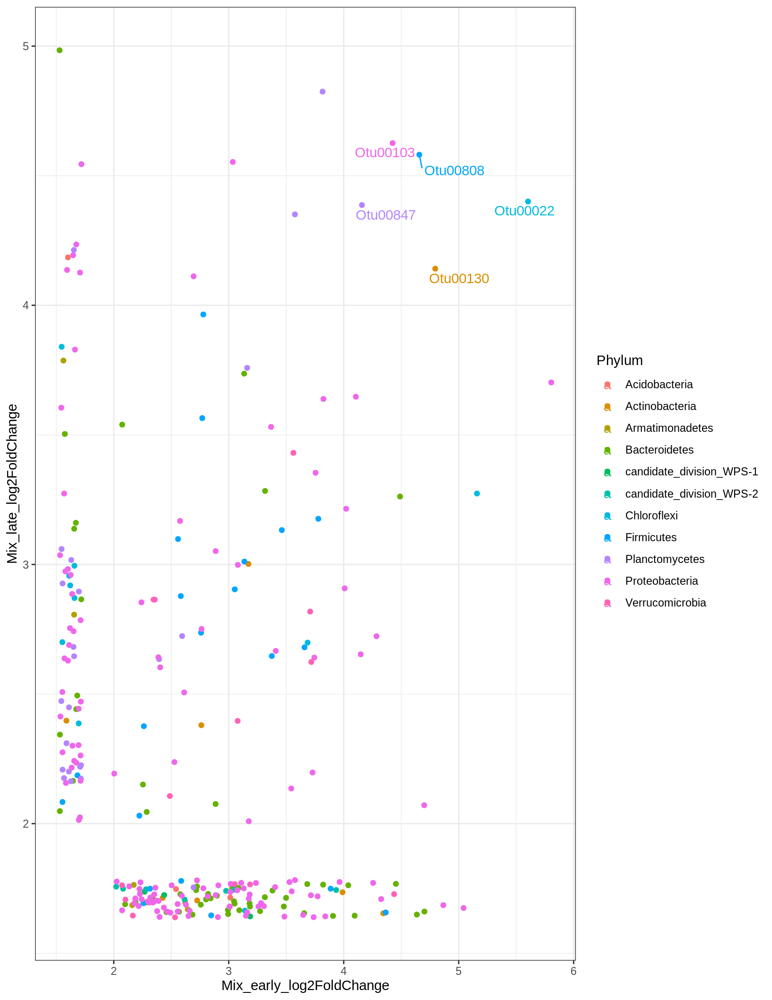
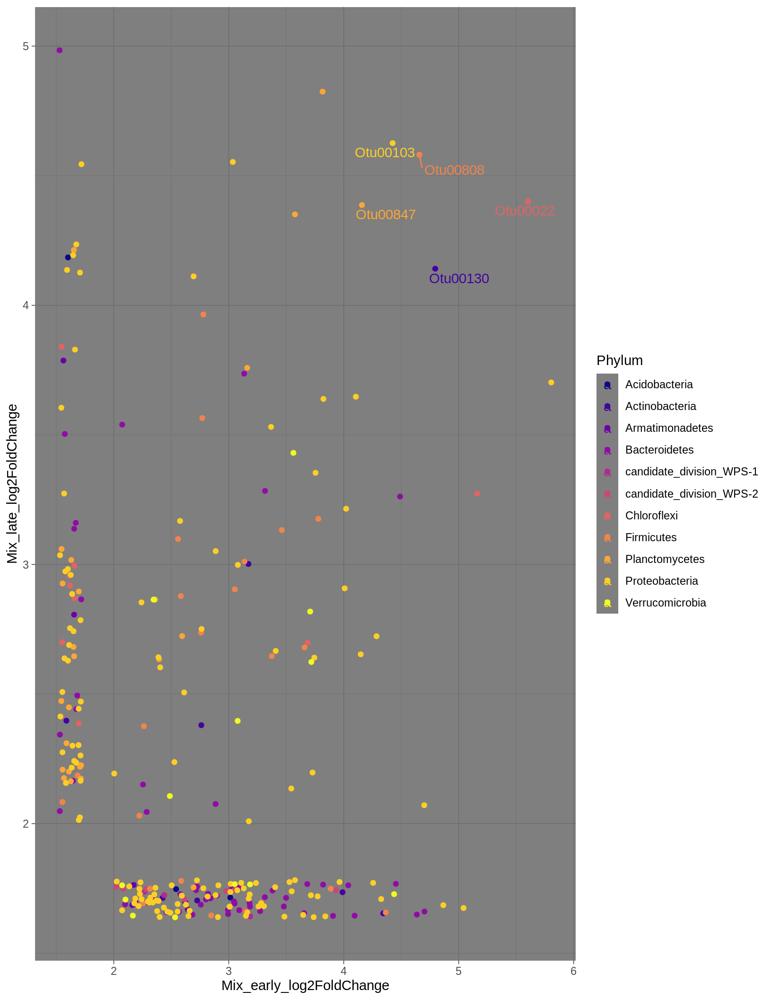

knitr::opts_knit$set(root.dir = normalizePath("."))inc.physeq <- readRDS("../data/incubation_physeq_Aug18.RDS")
source("../code/functions.R")data <- data.frame(sample_data(inc.physeq)) %>%
mutate(treatment = recode(treatment,
'Control' = 'Reference',
'CompAlfa' = 'Mix')) %>%
mutate(C_N = C_flash / N_flash, Inorganic_N = NH3 + NO3) %>%
mutate(TreatmentAndDay = paste(treatment, day))
rownames(data) <- data$i_id
sample_data(inc.physeq) <- data
sample_data(inc.physeq)$day <- as.factor(sample_data(inc.physeq)$day)
inc.physeq.data <- data.frame(sample_data(inc.physeq))
inc.physeq.data$response.group[inc.physeq.data$day == "0"] <-
"baseline"
inc.physeq.data$response.group[inc.physeq.data$day %in% c("7", "14", "21")] <-
"early"
inc.physeq.data$response.group[inc.physeq.data$day %in% c("35", "49", "97")] <-
"late"
inc.physeq.data <- inc.physeq.data %>%
mutate(Treatment_Response = paste(treatment, response.group, sep = '_'))
rownames(inc.physeq.data) <- inc.physeq.data$i_id
sample_data(inc.physeq) <- inc.physeq.dataThe early response group in alfalfa samples compared to reference.
## Subset to early response
alf.early <- subset_samples(inc.physeq, Treatment_Response %in% c("Alfalfa_early", "Reference_early")) %>%
filter_taxa(function(x) sum(x) >= 3, T)
# Be very careful of the design formula in the who_diff_day() function
# This function also selects only LFC >= 2 and alpha 0.01 for significant and increasing otus to be returned
log.plot.early.alf <- alf.early %>%
phyloseq_to_deseq2( ~ Treatment_Response) %>%
DESeq(test = "Wald", fitType = "local") %>%
who_diff_day("Alfalfa_early", "Reference_early", alf.early) %>%
log_plot("Alfalfa OTUS in early group that are significantly more \n abundant compared to reference early (LFC > 2)")
# Add colum to data indicating treatment
log.plot.early.alf.data <- log.plot.early.alf$data %>%
mutate(trt = c("Alfalfa_early"))
# print plot with viridis color
p <- log.plot.early.alf + scale_colour_viridis_d(option = "plasma") +
theme_my()
ggsave("../Figures/LFC2ALFEARLY.png", plot = p, width = 180, height = 200, units = "mm", dpi = 500)## Late
alf.late <- subset_samples(inc.physeq, Treatment_Response %in% c("Alfalfa_late", "Reference_late")) %>%
filter_taxa(function(x) sum(x) >= 3, T)
# Make deseq and plot as above
log.plot.late.alf <- alf.late %>%
phyloseq_to_deseq2( ~ Treatment_Response) %>%
DESeq(test = "Wald", fitType = "local") %>%
who_diff_day("Alfalfa_late", "Reference_late", alf.late) %>%
log_plot("Alfalfa OTUS in late group that are significantly changing compared to reference late")
# Add colum to data indicating treatment
log.plot.late.alf.data <- log.plot.late.alf$data %>%
mutate(trt = c("Alfalfa_late"))
# print plot with viridis color
p <- log.plot.late.alf + scale_colour_viridis_d(option = "plasma") +
theme_my()
p
ggsave("../Figures/LFC2ALFLATE.png", plot = p, width = 180, height = 200, units = "mm", dpi = 500)# Common to both early and late with LFC >=4
otustokeep <- intersect(log.plot.early.alf.data$OTU, log.plot.late.alf.data$OTU)
# Trim and rename variables
early_alf_OTUS <- log.plot.early.alf.data %>%
filter(log2FoldChange >= 4) %>%
select(OTU, Phylum, Class, Order, Family, Genus, Alfalfa_early_log2FoldChange = log2FoldChange)
saveRDS(early_alf_OTUS, file = "../data/LFC>4_early_alf_OTUs.RDS")
late_alf_OTUS <- log.plot.late.alf.data %>%
filter(log2FoldChange >= 4) %>%
select(OTU, Phylum, Class, Order, Family, Genus, Alfalfa_late_log2FoldChange = log2FoldChange)
saveRDS(late_alf_OTUS, file = "../data/LFC>4_late_alf_OTUs.RDS")
# join early and late
all_alf <- full_join(early_alf_OTUS, late_alf_OTUS)This plot is showing the common OTUs with LFC > 4 while also showing the LFC of OTUs observed in only early or late, represented by the points landing below 4 on either axis. Common OTUs with LFC < 4 are left unlabeled.
p <- ggplot(all_alf,
aes(x = Alfalfa_early_log2FoldChange,
y = Alfalfa_late_log2FoldChange,
color = Phylum,
label = OTU)) +
geom_miss_point() +
geom_text_repel(aes(label=ifelse(Alfalfa_early_log2FoldChange>4 & Alfalfa_late_log2FoldChange>4,as.character(OTU),'')),hjust=1,vjust=1) +
theme(legend.position = "none")
p + scale_colour_viridis_d(option = "plasma") +
theme_dark()
# Save this list of alfalfa LFC > 2 for more plots
# Use all_alf
saveRDS(all_alf, file = "../data/LFC_alf_OTUs.RDS")
p <- p + scale_colour_viridis_d(option = "viridis") +
theme_my() +
theme(legend.position = "none")
ggsave("../Figures/LFC4ALFBOTH.png", plot = p, width = 90, height = 90, units = "mm", dpi = 500)These OTUs had response greater than 4 in both early and late alfalfa
OTUs <- all_alf %>%
filter(Alfalfa_early_log2FoldChange > 2 & Alfalfa_late_log2FoldChange > 2)
write.table(OTUs, file = "../Figures/alf_responders.txt", sep = ",", quote = F, row.names = F)
table <- kable(OTUs) %>%
kable_styling(bootstrap_options = "striped") %>%
scroll_box(width = "100%", height = "400px")
table| OTU | Phylum | Class | Order | Family | Genus | Alfalfa_early_log2FoldChange | Alfalfa_late_log2FoldChange |
|---|---|---|---|---|---|---|---|
| Otu00064 | Proteobacteria | Gammaproteobacteria | Pseudomonadales | Pseudomonadaceae | Pseudomonas | 5.607815 | 4.949407 |
| Otu00494 | Proteobacteria | Gammaproteobacteria | Pseudomonadales | Pseudomonadaceae | Pseudomonas | 5.940114 | 4.051312 |
| Otu00614 | Proteobacteria | Gammaproteobacteria | Enterobacteriales | Enterobacteriaceae | Enterobacteriaceae_unclassified | 6.023877 | 4.149035 |
| Otu00666 | Proteobacteria | Deltaproteobacteria | Bdellovibrionales | Bdellovibrionaceae | Bdellovibrio | 5.174459 | 4.280268 |
| Otu00808 | Firmicutes | Bacilli | Bacillales | Paenibacillaceae_1 | Paenibacillus | 4.637617 | 5.316243 |
| Otu00832 | Firmicutes | Bacilli | Bacillales | Paenibacillaceae_1 | Brevibacillus | 5.307862 | 6.497185 |
| Otu00847 | Planctomycetes | Planctomycetia | Planctomycetales | Planctomycetaceae | Planctomycetaceae_unclassified | 4.341184 | 4.855624 |
| Otu00953 | Firmicutes | Bacilli | Bacillales | Alicyclobacillaceae | Tumebacillus | 4.491668 | 4.381291 |
| Otu01203 | Proteobacteria | Deltaproteobacteria | Myxococcales | Polyangiaceae | Byssovorax | 4.347646 | 5.064442 |
| Otu01743 | Firmicutes | Bacilli | Bacillales | Alicyclobacillaceae | Tumebacillus | 4.024826 | 4.377167 |
BLASTn results for these two Otu00064 and Otu00494 were most similar to sequences from Pseudomonas fulva and Pseudomonas putida, both members of the Pseudomonas putida group
early <- alf.early %>%
phyloseq_to_deseq2( ~ Treatment_Response) %>%
DESeq(test = "Wald", fitType = "local")
late <- alf.late %>%
phyloseq_to_deseq2( ~ Treatment_Response) %>%
DESeq(test = "Wald", fitType = "local")
plotCounts(early, gene = c("Otu00064"), intgroup = c("Treatment_Response"))
plotCounts(early, gene = c("Otu00494"), intgroup = c("Treatment_Response"))
#Use above line to check if an OTU is increasing or decreasing depending on order of contrast, replace with OTU of interest, run the phyloseq to desey in #other areas to check compost or mix. plotCounts(late, gene = "Otu00064", intgroup = c("Treatment_Response"))
plotCounts(late, gene = "Otu00494", intgroup = c("Treatment_Response"))## Early
comp.early <- subset_samples(inc.physeq, Treatment_Response %in% c("Compost_early", "Reference_early")) %>%
filter_taxa(function(x) sum(x) >= 3, T)
# Be very careful of the design formula in the who_diff_day() function
# This function also selects only LFC >= 2 and alpha 0.01 for significant and increasing otus to be returned
log.plot.early.comp <- comp.early %>%
phyloseq_to_deseq2( ~ Treatment_Response) %>%
DESeq(test = "Wald", fitType = "local") %>%
who_diff_day("Compost_early", "Reference_early", comp.early) %>%
log_plot("Compost OTUS in early group that are significantly changing compared to reference early")
# Save a data frame of these results
log.plot.early.comp.data <- log.plot.early.comp$data %>%
mutate(trt = c("Compost_early"))
# print plot with viridis color
p <- log.plot.early.comp + scale_colour_viridis_d(option = "viridis") +
theme_my() +
theme(legend.position = "none")
ggsave("../Figures/LFC2COMPEARLY.png", plot = p, width = 180, height = 200, units = "mm", dpi = 500)## Late
comp.late <- subset_samples(inc.physeq, Treatment_Response %in% c("Compost_late", "Reference_late")) %>%
filter_taxa(function(x) sum(x) >= 3, T)
# Make deseq and plot as above
log.plot.late.comp <- comp.late %>%
phyloseq_to_deseq2( ~ Treatment_Response) %>%
DESeq(test = "Wald", fitType = "local") %>%
who_diff_day("Compost_late", "Reference_late", comp.late) %>%
log_plot("Compost OTUS in late group that are significantly changing compared to reference late")
# Save a data frame of these results
log.plot.late.comp.data <- log.plot.late.comp$data %>%
mutate(trt = c("Compost_late"))
# print plot with viridis color
p <- log.plot.late.comp + scale_colour_viridis_d(option = "viridis") +
theme_my() +
theme(legend.position = "none")
ggsave("../Figures/LFC2COMPLATE.png", plot = p, width = 180, height = 200, units = "mm", dpi = 500)# Common to both early and late with LFC >=4
otustokeep <- intersect(log.plot.early.comp.data$OTU, log.plot.late.comp.data$OTU)
# Trim and rename variables
early_comp_OTUS <- log.plot.early.comp.data %>%
filter(log2FoldChange >= 4) %>%
select(OTU, Phylum, Class, Order, Family, Genus, Compost_early_log2FoldChange = log2FoldChange)
saveRDS(early_comp_OTUS, file = "../data/LFC>4_early_comp_OTUs.RDS")
late_comp_OTUS <- log.plot.late.comp.data %>%
filter(log2FoldChange >= 4) %>%
select(OTU, Phylum, Class, Order, Family, Genus, Compost_late_log2FoldChange = log2FoldChange)
saveRDS(late_comp_OTUS, file = "../data/LFC>4_late_comp_OTUs.RDS")
# join early and late
all_comp <- full_join(early_comp_OTUS, late_comp_OTUS)This plot is showing the common OTUs with LFC > 4 while also showing the LFC of OTUs observed in only early or late, represented by the points landing below 4 on either axis. Common OTUs with LFC < 4 are left unlabeled.
p <- ggplot(all_comp,
aes(x = Compost_early_log2FoldChange,
y = Compost_late_log2FoldChange,
color = Phylum,
label = OTU)) +
geom_miss_point() +
geom_text_repel(aes(label=ifelse(Compost_early_log2FoldChange>4 & Compost_late_log2FoldChange>4,as.character(OTU),'')),hjust=0,vjust=0)
p + scale_colour_viridis_d(option = "plasma") +
theme_dark()
# Save this list of compcompa LFC > 2 for more plots
saveRDS(all_comp, file = "../data/LFC_comp_OTUs.RDS")These OTUs had response greater than 4 in both early and late compost
OTUs <- all_comp %>%
filter(Compost_early_log2FoldChange>4 & Compost_late_log2FoldChange>4)
write.table(OTUs, file = "../Figures/commp_responders.txt", sep = ",", quote = F, row.names = F)
kable(OTUs) %>%
kable_styling(bootstrap_options = "striped") %>%
scroll_box(width = "100%", height = "400px")| OTU | Phylum | Class | Order | Family | Genus | Compost_early_log2FoldChange | Compost_late_log2FoldChange |
|---|---|---|---|---|---|---|---|
| Otu00022 | Chloroflexi | Thermomicrobia | Sphaerobacterales | Sphaerobacteraceae | Sphaerobacter | 7.337210 | 6.388256 |
| Otu00030 | Bacteria_unclassified | Bacteria_unclassified | Bacteria_unclassified | Bacteria_unclassified | Bacteria_unclassified | 6.752488 | 5.514221 |
| Otu00103 | Proteobacteria | Proteobacteria_unclassified | Proteobacteria_unclassified | Proteobacteria_unclassified | Proteobacteria_unclassified | 5.096813 | 6.140644 |
| Otu00130 | Actinobacteria | Actinobacteria | Actinomycetales | Nocardiopsaceae | Thermobifida | 6.568113 | 5.232289 |
| Otu00139 | Proteobacteria | Deltaproteobacteria | Myxococcales | Myxococcales_unclassified | Myxococcales_unclassified | 6.194088 | 5.011721 |
| Otu00277 | Proteobacteria | Deltaproteobacteria | Myxococcales | Myxococcales_unclassified | Myxococcales_unclassified | 4.639985 | 4.534942 |
| Otu00281 | Proteobacteria | Gammaproteobacteria | Gammaproteobacteria_unclassified | Gammaproteobacteria_unclassified | Gammaproteobacteria_unclassified | 4.722531 | 4.271424 |
| Otu00331 | Verrucomicrobia | Opitutae | Opitutales | Opitutaceae | Opitutaceae_unclassified | 4.243413 | 4.304094 |
| Otu00378 | Chloroflexi | Chloroflexi_unclassified | Chloroflexi_unclassified | Chloroflexi_unclassified | Chloroflexi_unclassified | 6.598657 | 5.517442 |
| Otu00395 | Proteobacteria | Gammaproteobacteria | Alteromonadales | Alteromonadaceae | Haliea | 4.722263 | 4.896955 |
| Otu00655 | Proteobacteria | Deltaproteobacteria | Myxococcales | Myxococcales_unclassified | Myxococcales_unclassified | 6.786259 | 5.738909 |
| Otu00737 | Proteobacteria | Deltaproteobacteria | Myxococcales | Myxococcales_unclassified | Myxococcales_unclassified | 5.036159 | 4.052133 |
| Otu00847 | Planctomycetes | Planctomycetia | Planctomycetales | Planctomycetaceae | Planctomycetaceae_unclassified | 4.516581 | 4.529000 |
## Early
mix.early <- subset_samples(inc.physeq, Treatment_Response %in% c("Mix_early", "Reference_early")) %>%
filter_taxa(function(x) sum(x) >= 3, T)
# Be very careful of the design formula in the who_diff_day() function
# This function also selects only LFC >= 2 and alpha 0.01 for significant and increasing otus to be returned
log.plot.early.mix <- mix.early %>%
phyloseq_to_deseq2( ~ Treatment_Response) %>%
DESeq(test = "Wald", fitType = "local") %>%
who_diff_day("Mix_early", "Reference_early", mix.early) %>%
log_plot("Mix OTUS in early group that are significantly changing mixared to reference early")
# Save a data frame of these results
log.plot.early.mix.data <- log.plot.early.mix$data %>%
mutate(trt = c("Mix_early"))
# print plot with viridis color
p <- log.plot.early.mix + scale_colour_viridis_d(option = "viridis") +
theme_my() +
theme(legend.position = "none")
ggsave("../Figures/LFC2MIXEARLY.png", plot = p, width = 180, height = 200, units = "mm", dpi = 500)## Late
mix.late <- subset_samples(inc.physeq, Treatment_Response %in% c("Mix_late", "Reference_late")) %>%
filter_taxa(function(x) sum(x) >= 3, T)
# Make deseq and plot as above
log.plot.late.mix <- mix.late %>%
phyloseq_to_deseq2( ~ Treatment_Response) %>%
DESeq(test = "Wald", fitType = "local") %>%
who_diff_day("Mix_late", "Reference_late", mix.late) %>%
log_plot("Mix OTUS in late group that are significantly changing mixared to reference late")
# Save a data frame of these results
log.plot.late.mix.data <- log.plot.late.mix$data %>%
mutate(trt = c("Mix_late"))
# print plot with viridis color
p <- log.plot.late.mix + scale_colour_viridis_d(option = "viridis") +
theme_my() +
theme(legend.position = "none")
ggsave("../Figures/LFC2MIXLATE.png", plot = p, width = 180, height = 200, units = "mm", dpi = 500)# Common to both early and late with LFC >=4
otustokeep <- intersect(log.plot.early.mix.data$OTU, log.plot.late.mix.data$OTU)
early_mix_OTUS <- log.plot.early.mix.data %>%
filter(log2FoldChange >= 4) %>%
select(OTU, Phylum, Class, Order, Family, Genus, Mix_early_log2FoldChange = log2FoldChange)
saveRDS(early_mix_OTUS, file = "../data/LFC>4_early_mix_OTUs.RDS")
late_mix_OTUS <- log.plot.late.mix.data %>%
filter(log2FoldChange >= 4) %>%
select(OTU, Phylum, Class, Order, Family, Genus, Mix_late_log2FoldChange = log2FoldChange)
saveRDS(late_mix_OTUS, file = "../data/LFC>4_late_mix_OTUs.RDS")
# join early and late
all_mix <- full_join(early_mix_OTUS, late_mix_OTUS)This plot is showing the common OTUs with LFC > 4 while also showing the LFC of OTUs observed in only early or late, represented by the points landing below 4 on either axis. Common OTUs with LFC < 4 are left unlabeled.
p <- ggplot(all_mix,
aes(x = Mix_early_log2FoldChange,
y = Mix_late_log2FoldChange,
color = Phylum,
label = OTU)) +
geom_miss_point() +
geom_text_repel(aes(label=ifelse(Mix_early_log2FoldChange>4 & Mix_late_log2FoldChange>4,as.character(OTU),'')),hjust=0,vjust=0)
p
p + scale_colour_viridis_d(option = "plasma") +
theme_dark()
# Save this list of mixmixa LFC > 2 for more plots
saveRDS(all_mix, file = "../data/LFC_mix_OTUs.RDS")These OTUs had response greater than 4 in both early and late mix
OTUs <- all_mix %>%
filter(Mix_early_log2FoldChange>4 & Mix_late_log2FoldChange>4)
write.table(OTUs, file = "../Figures/mix_responders.txt", sep = ",", quote = F, row.names = F)
kable(OTUs) %>%
kable_styling(bootstrap_options = "striped") %>%
scroll_box(width = "100%", height = "400px")| OTU | Phylum | Class | Order | Family | Genus | Mix_early_log2FoldChange | Mix_late_log2FoldChange |
|---|---|---|---|---|---|---|---|
| Otu00022 | Chloroflexi | Thermomicrobia | Sphaerobacterales | Sphaerobacteraceae | Sphaerobacter | 5.700092 | 4.563735 |
| Otu00103 | Proteobacteria | Proteobacteria_unclassified | Proteobacteria_unclassified | Proteobacteria_unclassified | Proteobacteria_unclassified | 4.489853 | 4.771429 |
| Otu00130 | Actinobacteria | Actinobacteria | Actinomycetales | Nocardiopsaceae | Thermobifida | 4.893353 | 4.339406 |
| Otu00808 | Firmicutes | Bacilli | Bacillales | Paenibacillaceae_1 | Paenibacillus | 4.782181 | 4.802353 |
| Otu00847 | Planctomycetes | Planctomycetia | Planctomycetales | Planctomycetaceae | Planctomycetaceae_unclassified | 4.244290 | 4.541349 |
# We have lists of LFC OTUs, need to create a function that takes this and a target response group and returns the average relative abundance for these
# input: list of OTUs, Treatment group
resp_alf <- readRDS("../data/LFC_alf_OTUs.RDS") %>% dplyr::rename(label = OTU)
OTUs <- as.character(resp_alf$label)
alf.rela.early <- RelaOTUs(inc.physeq, c("Alfalfa_early"), OTUs) %>%
select(label = OTU, Alfalfa_early_meanRela = mean)
alf.rela.late <- RelaOTUs(inc.physeq, c("Alfalfa_late"), OTUs) %>%
select(label = OTU, meanAlfalfa_late_meanRela = mean)
all_alf_rela <- full_join(resp_alf, alf.rela.early) %>%
full_join(alf.rela.late)## Joining, by = "label"Joining, by = "label"